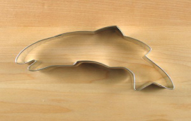

From our family to yours, we hope you find our unique recipe, tasty treat that imparts a healthy dose of salmon in your diet. Our kids love sharing our salmon cookies with friends. This unique tasty treat is loved all over the world. It also makes a great treat for your cat or dog. It truly is a unique cookie. Please visit our store location nearest you for information on franchise opportunities and to sample our product.


Come visit our store locations and take home your own cookie dough to bake in the comfort of your own home. With each purchase you get a free cookie cutter and free frosted salmon cookie!